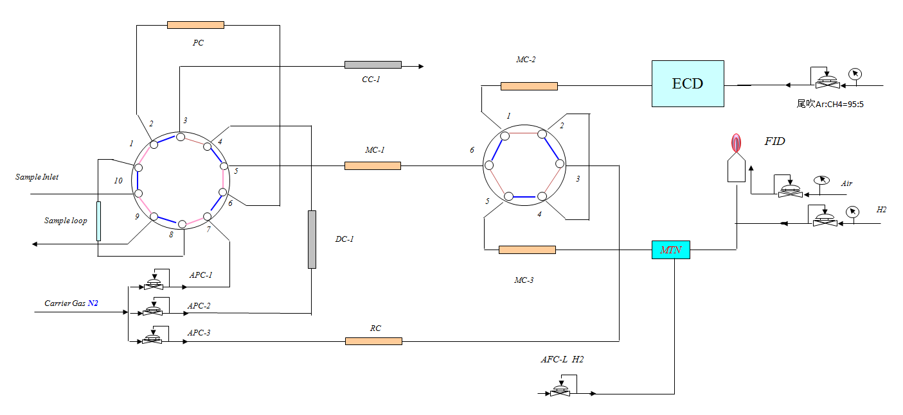
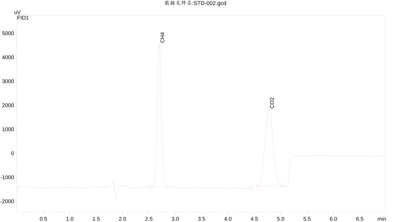
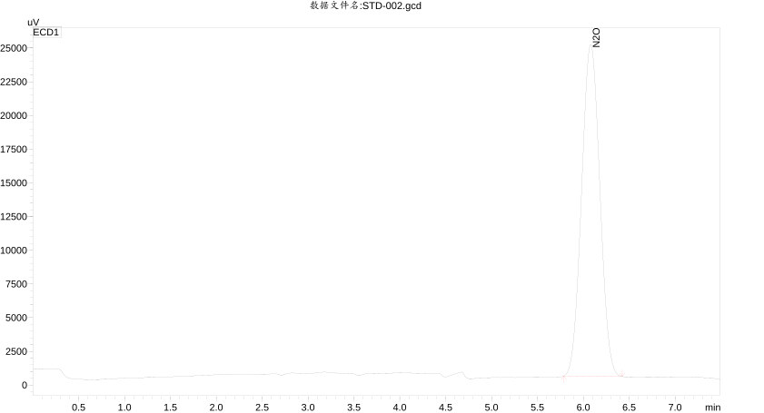

多组分检测
围绕 CH₄、CO₂、N₂O 三类核心温室气体建立对应检测通道。
专题定位不是单一气相色谱测试项目，而是围绕温室气体组分、采样设计、色谱分离、定量校准和科研解释组织检测能力。
围绕 CH₄、CO₂、N₂O 三类核心温室气体建立对应检测通道。
利用自动六通阀、十通阀、定量环及专用柱路完成样品定量进样和分流分析。
FID 与 ECD 分别承担不同气体的响应检测，CO₂ 经甲烷转化后进入 FID 路径。
结合标准气体、工作站和色谱峰信息开展定性、定量及批次数据整理。
以下检测路径依据所提供的温室气体专用 GC 配置和典型谱图整理，具体方法参数与量程需根据样品浓度和研究需求确认。
采用 FID 氢火焰离子化检测通道，适用于温室气体研究中的甲烷组分分析。
通过甲烷转化炉将 CO₂ 转化后进入 FID 通道，实现与 CH₄ 配套的分析路径。
采用 ECD 电子捕获检测器，实现 N₂O 的专用响应与色谱峰定量分析。
GC‑2010Pro 与 GC‑2014CA 两套配置均采用自动压力控制、双检测器、甲烷转化单元、自动阀箱和专用柱组。

GC‑2010Pro 主机 + ECD‑2010 + FID‑2010 + MTN + 自动阀箱 + 专用柱组。
GC‑2014CA 主机 + ECD‑2014CA + FID‑2014CA + MTN + 自动阀箱 + 专用柱组。
原始资料中给出了 FID 通道 CH₄ / CO₂ 与 ECD 通道 N₂O 的典型色谱图，可直观看到目标气体的独立响应峰。


可围绕不同环境与生物过程中的温室气体产生、释放和变化开展科研型检测，实际采样方案需结合研究尺度和浓度范围设计。
农业土壤、施肥处理、培养实验等场景下 CH₄ / CO₂ / N₂O 变化研究。
湿地、沉积物、植物根际及生态过程相关气体释放与碳氮循环研究。
污水处理、厌氧/好氧过程、发酵体系及反应器气相组分研究。
吸附、催化、转化与温室气体减排材料研究中的气体浓度变化与效果评价。
对科研项目而言，前期确认采样方式、浓度区间、样品数量和时间点，比单纯“送样测试”更重要。
研究对象、目标气体、样品数量、时间点及预期浓度范围。
确认气体采集与保存方式，避免泄漏、吸附或交叉污染影响结果。
结合标准气体和目标浓度区间确定校准与分析方案。
自动阀进样、色谱分离、FID / ECD 通道检测与峰积分。
整理目标组分结果、色谱图、批次信息及科研分析所需数据。
如果你正在开展 CH₄、CO₂、N₂O 相关的排放、通量、减排或机理研究，可先提供研究体系和样品信息，我们再匹配检测与数据方案。
AI、计算模拟、检测方案与技术路线咨询，请添加技术企业微信。
 添加时建议备注：官网专题 + 单位 + 研究方向
添加时建议备注：官网专题 + 单位 + 研究方向
样品、检测项目、送样、报价、合同与进度需求，请添加表征/耗材企业微信。
 建议准备：样品类型 · 数量 · 目标物/指标 · 期望周期
建议准备：样品类型 · 数量 · 目标物/指标 · 期望周期